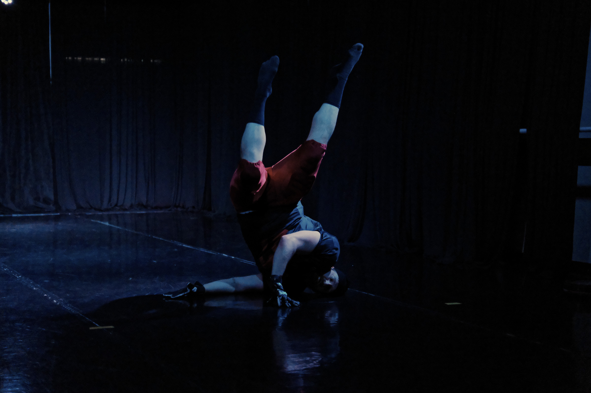
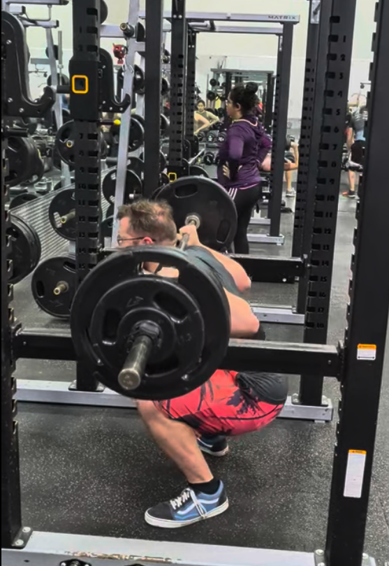
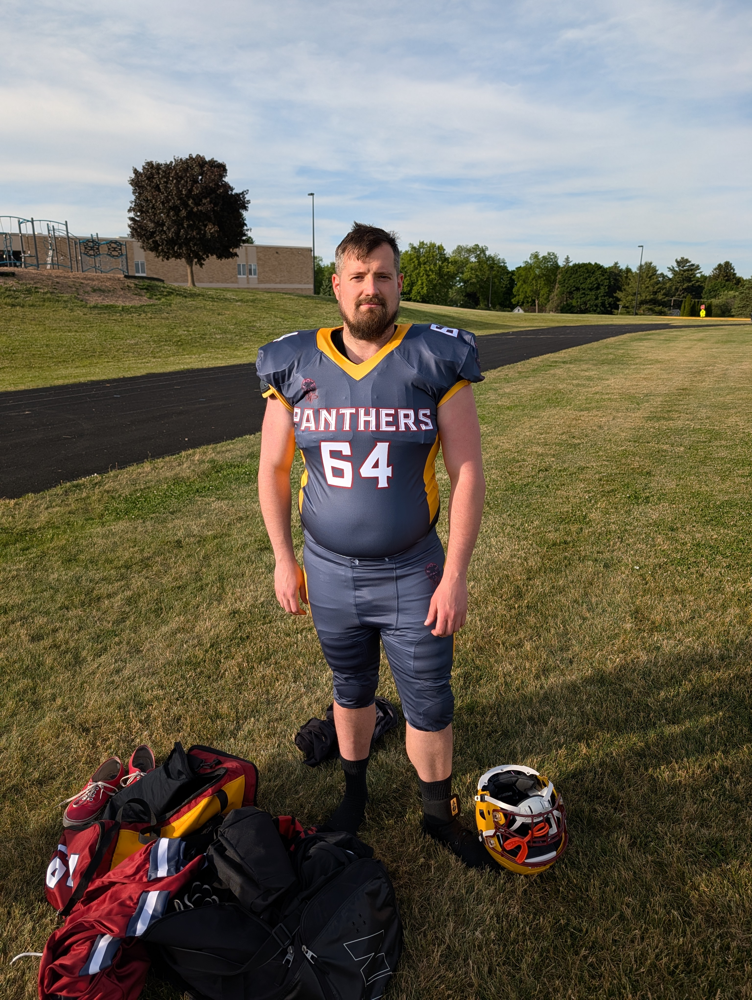
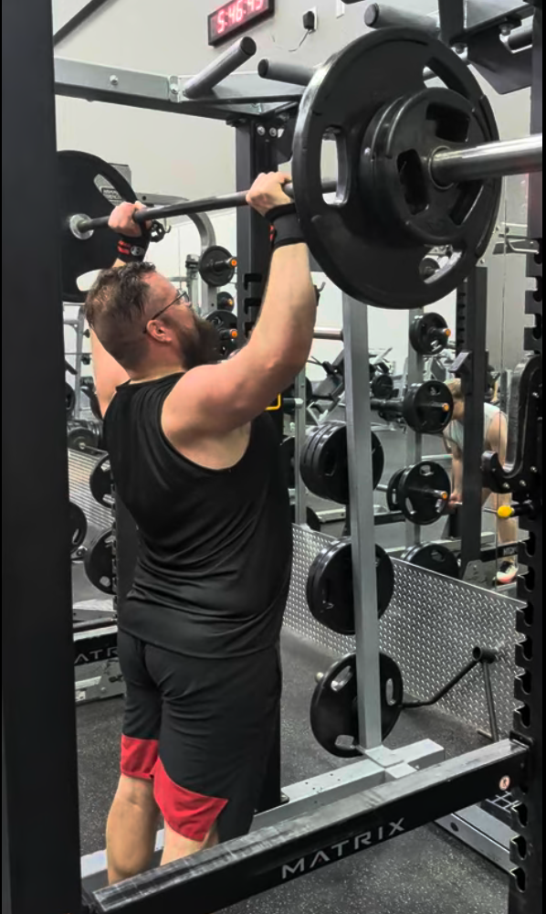
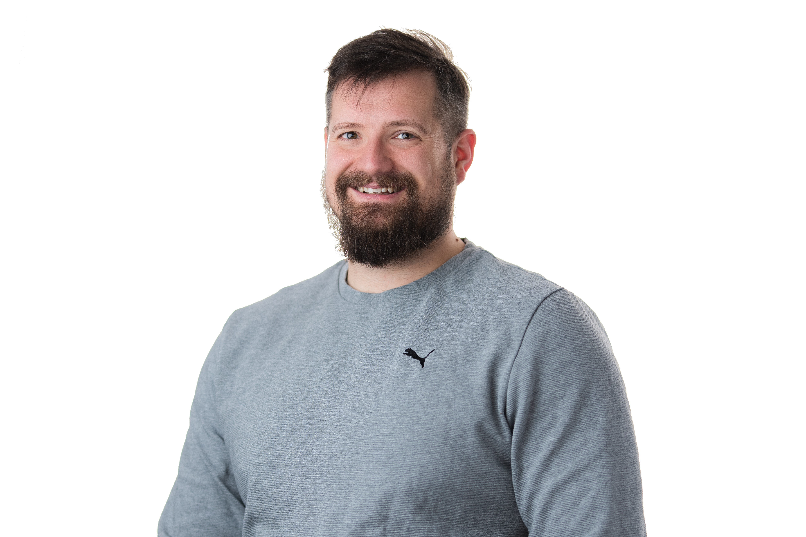

Mother
Choreographer: Christopher Coffman
Dancers: Britney Hargis, Andrea Schwerbel, Haley Hamilton
Music: Femen – Crystal Castles, Mourning – Colin Stetson
Videographer: Yaron Kidron
Location/Performance: Madison Experimental Dance Incubator, Cycle 2. August 9th, 2026
Style: Contemporary
Description: Mother is a horror-inspired contemporary trio. Two daughters resort to unusual methods to see their recently departed mother again.
Ferdinand Finale
Choreographers/Dancers: Christopher Coffman and Mike Tredupp
Music: I’ll Make a Man Out of You – Disney Peaceful Strings
Videographer: Jim Vaness
Location/Performance: Ferdinand by Beatrix Productions September 26, 2026
Style: Contemporary
Description: Ferdinand the bull has been joyously returned to his meadow.
A Cycle of Downs
Choreographer/Dancer: Christopher Coffman
Music: Iron – Woodkid
Videographer: Yaron Kidron
Location/Performance: Madison Experimental Dance Incubator, Cycle 1. May 7th, 2026
Style: Contemporary
Description: A Cycle of Downs explores movements from the sport of football through the lens of contemporary dance. Through each down, the movements repeat and evolve as the game plays out on stage.

Photo by Yaron Kidron
Strength and Conditioning is the backbone of any dancer or athlete; it is not an afterthought. For both dancers and athletes, it heavily influences their performance capabilities, injury risk, and the length of their careers. My mission as a strength coach is to support athletic development so that my clients can engage confidently with their sports at maximum performance and maximize their longevity. I've worked extensively with dancers, football players, and powerlifters—populations that demand explosive movements, endurance, and high levels of coordination.
My approach to strength training is rooted in modern research and my experience working with athletes and dancers. I avoid training gimmicks and unnecessary distractions. Technical skills are built by practicing your sport, the capacity to execute them is developed in strength and conditioning programs. The best programs are focused and simple, hence why I still use paper program cards for exercise programming. In the gym, focus should be the weight on the bar. I’ve found that smartphone apps are currently unable to capture what a pen and paper can.
For Dancers
Our dance training generally does a very good job of training balance, ankle strength, and mobility, but often does not give us enough focus on basic strength and anaerobic conditioning to support us during performances. Working with me, you can expect to build a base layer of full body strength, which will help with your trick execution, entering and exiting the floor, and inversions in floor work. Once we build a base layer of strength, we’ll switch the focus to power to bring your leaps and jumps to new heights.
For Athletes
I build strength and conditioning programs to the physical demands of your sport and appropriate to the time of year (offseason, preseason, in-season). I’ll meet you at your current level of physical development, whether that be starting with building a solid strength foundation or developing sport specific capacities like explosive power off the line or vertical jump height.
Qualifications
- NSCA Certified Strength and Conditioning Specialist (CSCS®)
- Master's degree in Health and Human Physiology
Private Consultations
Please reach out if you are interested in training with me. However, I maintain a strict capacity and am selective, working with only a small handful of private clients at any given time to ensure focused, high-level programming.
Competitions & Performances
Lift Off
Event Type: Unsanctioned Powerlifting Meet
Date & Time: October 17 at 8:00 AM
Location: Unbroken Strength in Verona
Description: I'll be competing in this local powerlifting meet.

Madison Experimental Dance Incubator - Cycle 3
Event Type: Contemporary Dance Showcase
Date & Time: Sunday, November 7 @ 7:00 PM
Location: Ballet U in Verona
Tickets: medi.catmachinesdance.com
Description: Ashley Harty and I will be choreographing and performing a contemporary piece for this MEDI cycle.
Charity Football Game: Fox River Raiders vs. The Middleton Panthers
Event Type: Semi-Professional Football
Date & Location: November TBD
Position: Offensive Lineman (#64)
Description: I will be taking the field for a charity match.

Powerlifting America - Wisconsin State Championships
Event Type: Sanctioned Powerlifting Championship
Date: Saturday, December 5
Location: Bakke Athletics in Fitchburg
Description: Come watch me compete in the state powerlifting championships.

In Progress / Stay Tuned
Strength and Conditioning for Dancers
Event Type: Workshop
Details: Date, Location, and Venue TBD
Description: A workshop for beginning strength conditioning focused on dancers. We'll be trading the barre for barbells.
Beginner Contemporary for Retirees
Event Type: Community Dance Class
Details:Will be in Yuma, AZ. Date, and Venue TBD
Audience: Adults 55+ (All ages welcome; music selection will be 13+)
Description: A beginner contemporary choreography class intended for adults 55+.

Photo by Shiloh from Painted Turtle Productions
Christopher Coffman is a choreographer, athlete, technical consultant, and strength coach. He holds a Master’s degree in Human Physiology and is an NSCA Certified Strength and Conditioning Specialist (CSCS®). Chris is also a current offensive lineman for the Middleton Panthers semi-professional football team, and is a former professional arena football player. He also occasionally competes in powerlifting meets as a semi-retired competitive powerlifter. Off the field and outside the studio, Chris operates Superluminary LLC and works as a technical/software consultant, providing guidance on systems and software architecture. No matter the domain, Chris’s overall work is defined by power, precision, and raw strength.